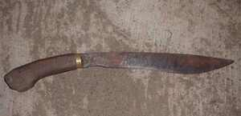
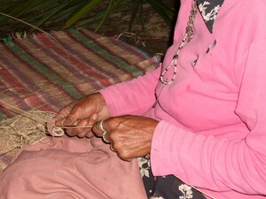

ugpit  
/ʔugpit/
n.
“bolo”
n.
a bolo, usually used by men for clearing fields, hacking down trees, and cutting timber when house-building
Wrd.Gloss: bolo
Cult. A long heavy single-edged knife
Spec. subeng —handle
Spec. tingting —side of the blade
Spec. kamel —attachment to the handle?
Spec. galang —blade
Spec. tengel —back
Spec. irung —point
Spec. pamalahen —inner curved edge on the blade
Eng. bolo; knife variety; bush knife
Tag. iták; gulok
Ceb. sundang
Ilo.: bunéng
OCM: General Tools (412)
Online dict status: -
Usage level: F
v.
for someone (eg-ugpit, mig-ugpit/in-ugpit, agent, eg><ø-) to strip bagtek or balahen cane (eg-ugpitan, in-ugpitan/mig-ugpitan/pig-ugpitan, patient, eg><an-) with a small knife, e.g. ilab, gepes, or a small bolo (ugpit) (ig-ugpit, in-ugpit, instrument, ig><ø-)
Egkamangeen ku ay-ayari ka ilab ku su eg-ugpit a te balahen.
I'll sharp my small knife well for me to strip cane.
Eg-ugpitan ku ka balahen ne eggimuwen ku ne sen-ung.
I will strip the cane for I'll make it handle (e.g.,usually handle or tie of a basket)
Ka ilab ka ig-ugpit ku te balahen.
The small knife as we used to strip cane.
Eng. strip, to
Online dict status: -
Usage level: M
Updated by: RJH,TME,AAA,QDL
Last updated: 17/Jul/2012
"ugpit" in healthbook "Natibbas te ugpit ka paa ni Biltu"
This page last updated: 03-Jan-2020
Copyright © 2009-2014, Matigsalug Language Christian Association, Inc